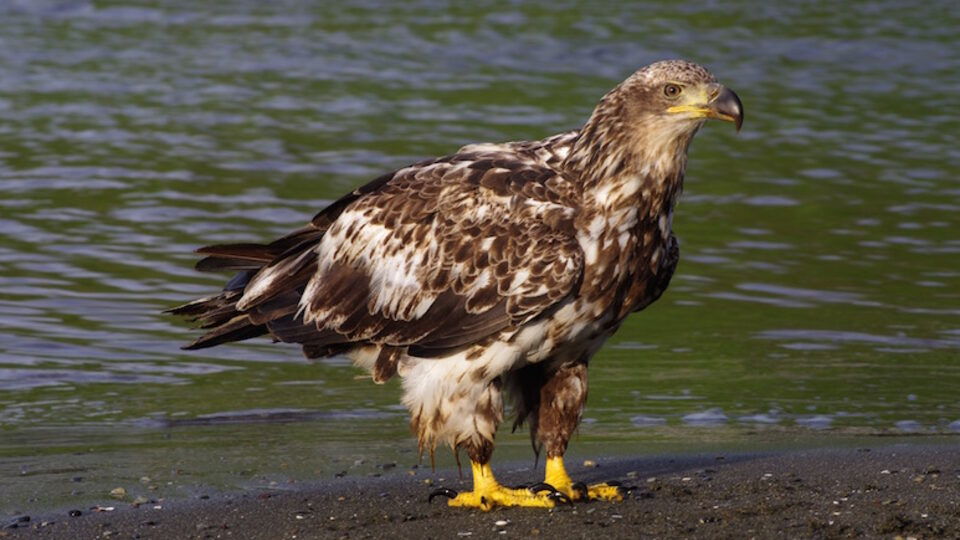
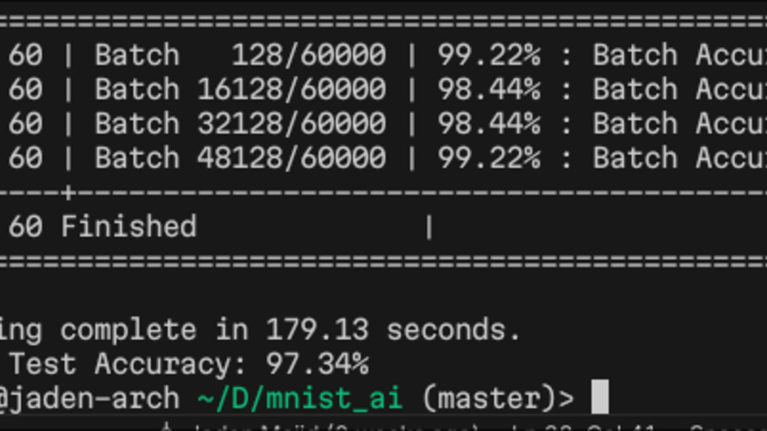
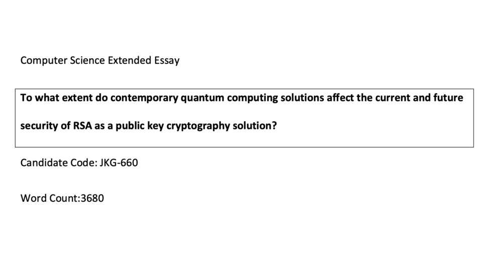

MY PATH
YOW -> CMB -> MNL -> NYC -> CVG -> YYZ -> MNL -> PVG -> YVR -> HKG -> YVR
| Computation
| Climate Change
Personal Ricing
Ongoing
Hyprland desktop setup intended to be minimal and frictionless.
View

ReSkayl
Ongoing
PyTorch SRGAN Upscaler architecture without VGG weights for stable training.

NN in C
2024
Feed-forward neural net engineered from scratch, achieving 97%+ accuracy.
View
WikiScrape
2025
Multi-threaded Wikipedia crawler using Tokio mapping articles as a directed graph in Rust.
View
Fractal Generator
2025
A Rust-based generator for producing high-resolution fractals using procedural techniques.
View

PHYS 210
2023
A collection of 5 physics simulations in Python with NumPy array broadcasting.
View

Gravity Simulator
2022
A Newtonian Gravity simulator to simulate n-body gravitation in Pygame.
View

Algo Visualizer
2022
Creates a visual representation of 5 different sorting algorithms in Pygame.
View

CS Extended Essay
2021
IB thesis about quantum computing and cryptography focusing on Shor's Algorithm.
View PDF
Hong Kong Disneyland
Tech & Digital Intern | SEP'24 - JUL'25
Reduced data interface project cost by 95% compared to a third party quote. Automated over 1,100 work-hours per year of manual operations workflows. Developed a full-stack system digitizing record-keeping and incident analysis.
Deloitte Digital
Consulting Intern | JUL'24 - AUG'24
Developed Python scripts for generating QA synthetic marketing data deployments. Managed lifecycle ownership of feature deployment, reducing tracking feature cost by 80%.
UBC Physics Dept
Teaching Assistant | MAY'23 - APR'24
Facilitated lecture and labs for 100+ students, debugging numerical python simulations.
 START
START